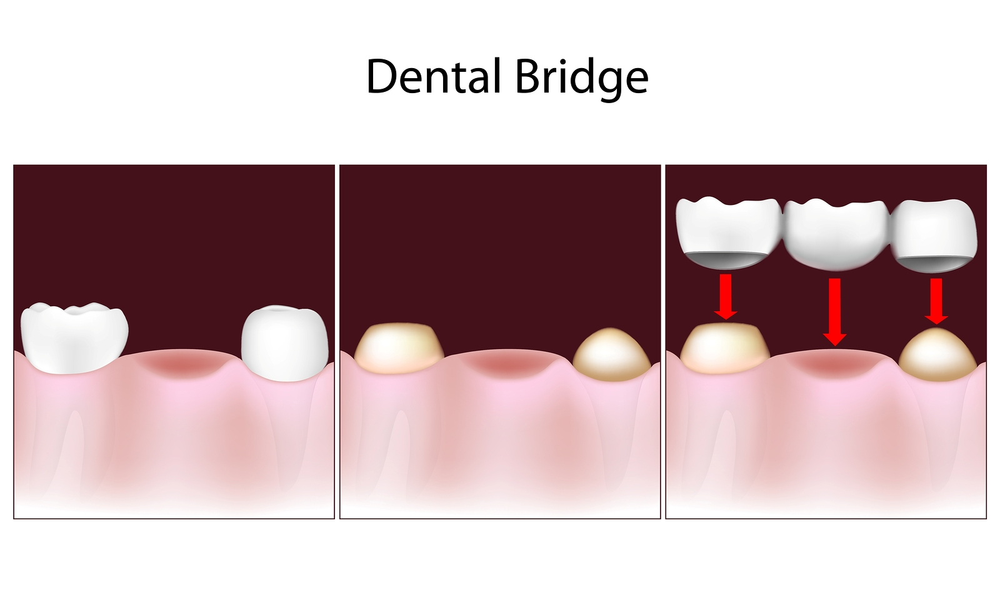

A bridge is a way of replacing missing natural teeth by taking support from the adjacent teeth. If you're having a tooth-colored bridge made, it could be a porcelain-and-metal bridge, or, with new technology available today, it could be an all-porcelain bridge. To have enough strength to withstand biting forces, porcelain bridges used to always be built upon a metal core. If you've ever noticed a dark blue line at the edge of a bridge, now you know what caused it: the dark metal inside the porcelain. New breakthroughs in adhesives and stronger porcelain materials make it possible to make bridges entirely out of porcelain. All-porcelain bridges maintain a translucency that makes them hard to tell from natural teeth. Without metal, the problem of a dark line at the edge of the gums is eliminated. This allows us to place the edge of the bridge above the gum line and that's healthier for your tooth and gums. When you want to improve your smile, all-porcelain bridges are a beautiful and natural-looking choice.
Placing a bridge after a tooth's been lost can prevent a chain reaction of problems that would affect your entire mouth. Like other things, teeth need each other for support. When one tooth is lost, the biting force changes on the teeth next to the space, and they begin to shift. When a tooth no longer has anything to chew against, it begins to extrude out of the socket. You can eventually end up losing it. As your bite changes, it gets harder and harder to chew your food. And you may get damage to your jaw joint, the TMJ. It's much harder to clean teeth that have shifted. Harmful plaque and tartar accumulate in these new hard-to-reach places, causing cavities and the permanent bone loss that comes with gum disease. Like other bridges, a dental bridge uses abutments for support and to hold it in place. A missing tooth really changes a person's smile, but a bridge is a good way to get your smile back.
